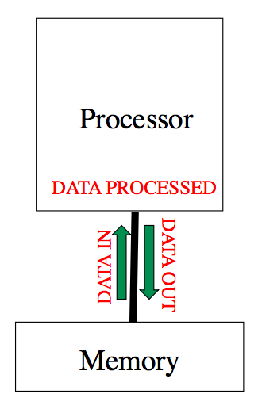
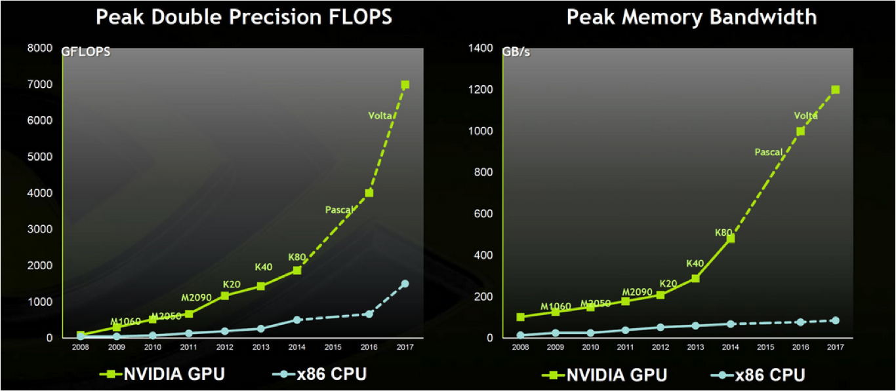

GPU Concepts / Architectures
Kevin Stratford
kevin@epcc.ed.ac.uk
Material by: Alan Gray, Kevin Stratford
Outline
- Factors influencing performance
- How do CPU / GPU architectures differ?
- Some trends in architecture
- Programming scientific applications?
Factors influencing performance

- Clock speed: processing rate per compute element
- Memory latency: time to retreive a data element
- Memory bandwidth: amount of data transferred in unit time
- Parallelism: replicating the basic units of computation
CPUs: Clock speed
- Power consumed by a device $\propto fV^2$
- Historically, devices got faster by increasing clock frequency $f$
- Voltage $V$ decreased to keep power managable
- Now, voltage cannot be decreased easily
- Bits are represented as a voltage difference
- Engineering constraints mean a finite voltage difference must be maintained for correct operation
- Increased clock frequency no longer available
CPUs: Memory latency
- Memory latency is a serious concern in design
- Can cost $O(100)$ clock cycles to retrieve data from main memory
- Steps often taken in hardware to reduce latencies
- Cache hierarchies
- Large on-chip caches to stage data
- L1, L2, L3, ..., controllers, coherency mechanisms, ...
- Other latency-hiding measures
- Hardware multithreading ("hyperthreading")
- Out-of-order execution
- E.g., Intel Sandybridge die

Image: http://www.theregister.co.uk/ (Source: Intel)
CPUs: Memory bandwidth
- CPUs generally use commodity DDR RAM
- "Double Data Rate"
- Manufacturers often don't publish bandwidth data
- A standard benchmark might give $O(100)$ GB / s
- In practice, memory bandwidth can be important
- Many real applications bandwidth limited
CPUs: Parallelism
- Source of increased performance now to use more cores
- Almost all commodity processors are now "many-core" or "multi-core"
- Limited clock speed keeps power consumption per core managable
- E.g., Intel Knights Landing die (72 cores)

Image: http://www.hardwareluxx.de/ (Source: Intel)
CPUs: Summary
- CPUs: a highly successful design for general purpose computing
- Used for operating systems, data bases, input/output, ...
- Inevitable design compromises...
- ...mean not specifically intended for HPC
- Much functionality, e.g., branch prediction, may not be required
- Hardware / power devoted to infrequent (HPC) operations
- Huge commercial market
- Huge investment involved in fabrication of new chips
- Bespoke HPC chips not economically viable
... from the dismal science...
GPUs
- Large lucrative market in another area: games
- Require Graphical Processing Units
- Two dominant manufacturers: AMD and NVIDIA
- GPUs are designed to do rendering
- An embarrassingly parallel problem
- Favours a balance between floating point/memory bandwidth
- How is design reflected in factors influencing performance?
GPUs: Clock speed
- Underlying clock frequency relatively modest
- Perhaps in high 100s MHz
- Performance based on parallelism...
GPUs: Memory latency
- Problem has not gone away
- Strategy to hide it again related to parallelism
- Schedule very many independent tasks
- More than can be accommodated on hardware at one time
- If one task encounters a long-latency operation
- ... swapped out and schedule another task
- Done in hardware, so fast
- Multithreading "writ large"
GPUs: Memory Bandwidth
Source: NVIDIA
- Parallelism: Basic unit is streaming multiprocessor (SM)

Source: https://devblogs.nvidia.com/parallelforall/inside-pascal/
- Many SMs form a graphics processing cluster (GPC)

Source: https://devblogs.nvidia.com/parallelforall/inside-pascal/
Trends in Architecture
- Certain convergence in architectures
- CPUs / GPUs will probably become more integrated
- Memory space may become more uniform
- No doubt in need for parallelism
- More cores / threads
Programming
- Graphics processing languages were / are used
- DirectX, OpenGL
- One or two early "heroic efforts" in scientific applications
- In 2007 NVIDIA developed CUDA
- Compute Unified Device Architecture
- Primarily to make graphics programming easier
- As a by-product, scientific applications become more tractable
Programming
- At the same time, OpenCL was developed
- Important in mobile phones, games
- Not so much traction in scientific applications
- Directives-based approaches are available
- Standards situation was relatively slow to become clear
- Relatively pain-free
- Sources of poor performance can be obscured
Big Data / Machine Learning

Source: https://xkcd.com/1897/
Summary
- GPUs offer the opportunity of cost and energy efficient computing
- The holy grail for programming:
performance, portability, productivity